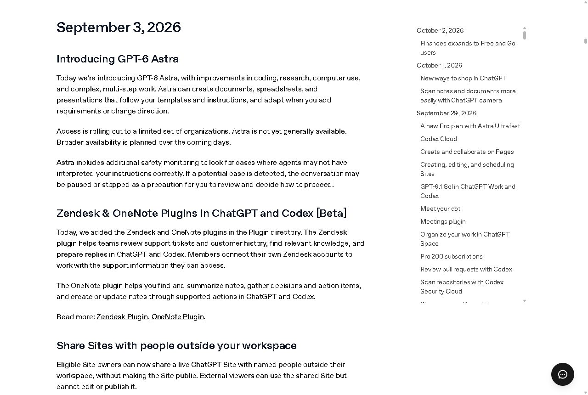
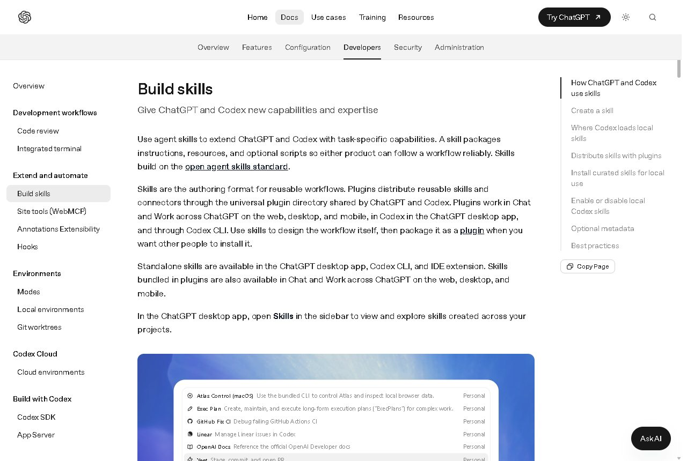
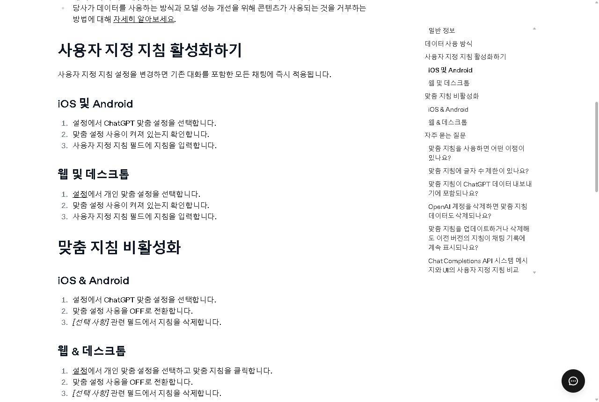
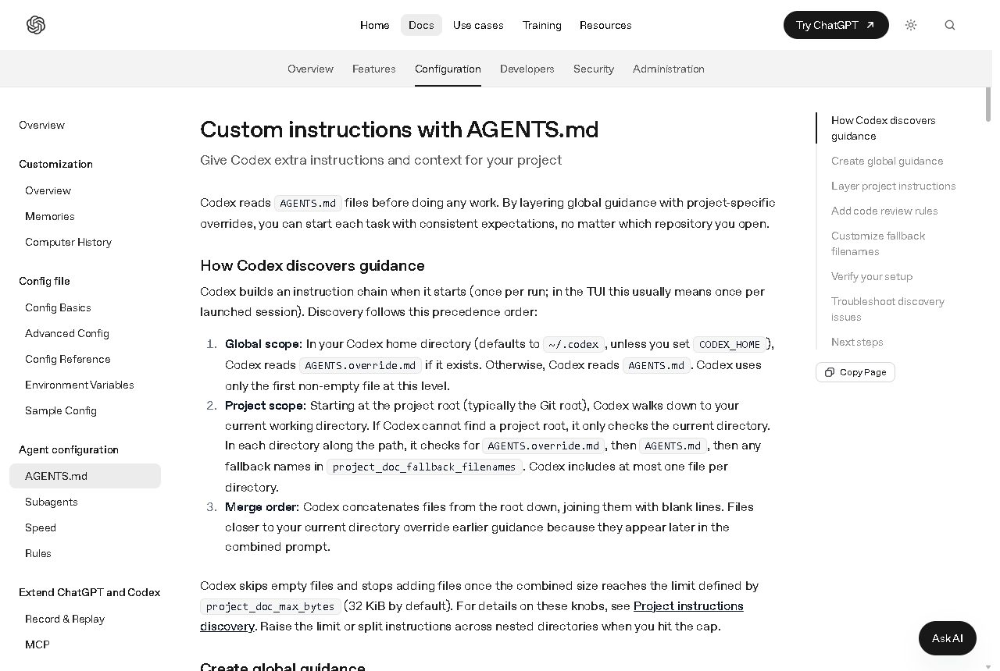

과정 흐름, 결과물 지도, 오늘 목표
1 ~ 4장GPT-6 아스트라, 새 데스크톱 앱, Codex
5 ~ 7장계정 확인, 맞춤 지침 설정, 작업 공간, 파일 흐름
8 ~ 15장지시 - 확인 - 수정 루프, 좋은 지시의 4요소
16 ~ 21장휴식 10분
주제 찾기 → 기획서 생성 → 수정 루프 2회
22 ~ 26장기획서 공유, Codex 설치 과제, 2차시 예고
27 ~ 31장오늘. 주제, 독자, 약속, 목차 초안
기획서 목차 → 챕터
전자책 챕터 → 슬라이드
전자책 · PPT → 60초 영상 · 소개 페이지

chatgpt.com/ko-KR/download → Windows · Mac 선택 → 같은 계정 로그인
ChatGPT ↔ Codex 전환 · ChatGPT 안에서 Chat ↔ Work 토글
프로젝트 · 대화 목록 유지 · 이전 앱은 ChatGPT Classic 으로 남음

권장 브라우저: Chrome · Edge 최신판 (앱보다 파일 처리 안정적)
상단 모델 메뉴에 아스트라 표시 → 준비 완료. 미표시 → 요금제 확인
설정 → 요금제 → 아스트라 사용 가능 요금제로 변경 → 새로고침
설정 → 언어: 한국어 · 응답 규칙은 다음 장 「맞춤 지침」에서 설정
목표: 오늘 안에 세팅 완료. 수업 후 단톡방 지원
설정 → 개인 맞춤 설정 → 맞춤 설정 사용 ON → 사용자 지정 지침
나 소개 · 답변 방식 · 최대 5,000자
프로젝트 ••• → 프로젝트 설정
과정 작업 규칙 · 맞춤 지침보다 우선
폴더 안 규칙 파일 · 작업 전 자동 읽기
2차시부터 사용

[나에 대해]
- 하는 일 : 예) 10년 차 공인중개사 · 블로그 운영
- AI 경험 : 초보, 코딩은 모름
- 주로 만드는 것 : 전자책, 발표자료, 짧은 영상, 소개 페이지
[답변 방식]
- 항상 한국어, 쉬운 말로. 전문 용어는 괄호로 풀이
- 결론 먼저, 그다음 단계별 설명
- 단계는 번호 목록, 한 번에 3~5단계까지
- 확실하지 않은 정보는 "확인 필요"라고 표시
- 내 요청이 모호하면 먼저 질문 1~2개
- 파일이 필요하면 내려받을 수 있는 파일로 제공웹 · 데스크톱: 왼쪽 아래 이름 → 설정 → 개인 맞춤 설정 · 모바일: 설정 → ChatGPT 맞춤 설정
사용자 지정 지침 칸 → 앞 장 템플릿 수정본 붙여 넣기 → 저장
오른쪽 질문 입력 → 내 규칙대로 답하면 성공
내 맞춤 지침을 읽고, 앞으로 어떻게 답할지 3줄로 요약해 줘. 그리고 '전자책 목차'를 그 방식대로 짧게 예시로 보여 줘.
나는 코딩을 모르는 콘텐츠 제작자다. 앞으로 전자책, 발표자료, 영상 대본, 소개 웹페이지를 만든다. - 항상 한국어로 답한다. - 결과물은 설명 없이 바로 본문부터 보여 준다. - 내가 "파일로"라고 하면 요청한 형식(DOCX, PDF, PPTX, HTML)으로 저장해 내려받게 한다. - 내 지시가 모호하면 먼저 2~3개 선택지를 제안하고 확인을 받는다. - 수정 요청에는 바뀐 부분만 다시 보여 주고, 무엇을 바꿨는지 한 줄로 알려 준다.
지금 바로 만들기 (2분)
자기소개 카드를 만들어 줘. - 이름 : 홍길동 - 하는 일 : 10년 차 공인중개사 - 4주 뒤 만들고 싶은 것 : 초보 투자자용 전자책 표 형태로 정리하고, "자기소개_1006.docx" 파일로 저장해 줘.
바이브코딩은
원하는 결과를 말로 설명하고,
AI가 만든 것을 보며 다듬어 가는
작업 방식.
코드가 아니라 전자책, PPT, 영상, 웹페이지. 무엇을 만들든 같은 방법
만들고 싶은 결과물을 한 문장으로. "전자책 목차", "60초 영상 대본"
읽을 사람을 구체적으로. "퇴근 후 부업을 찾는 40대 직장인"
분량, 구조, 파일 형식. "5장 목차, 각 장에 소제목 3개, 표로"
톤, 금지 사항, 반드시 포함할 것. "존댓말, 전문 용어 금지, 사례 1개 필수"
→ 누구나 아는 일반론 10개 항목. 내 경험 들어갈 자리 없음, 재지시해도 방향 안 잡힘
→ 독자 선명 · 내 사례 자리 확보 · 수정 지시 쉬움
정한 독자의 "내 얘기네" 반응 여부. 아무나 읽어도 되는 글 → 수정
분량 · 순서 · 형식: 지시대로인지. 빠진 항목 · 겹치는 항목 점검
내 경험 · 사례 · 표현 들어갈 자리 여부. 누가 써도 같은 글 → 수정
"3장 제목을 질문형으로 바꿔 줘. 나머지는 그대로."
"4장과 5장은 내용이 겹치니 하나로 합치고, 2장은 둘로 나눠 줘."
"각 장 끝에 실천 과제 1개씩 더해 줘. 서론의 통계 인용은 빼 줘."
어디를 어떻게 바꿔 줘. 나머지는 그대로 두고, 바뀐 부분만 다시 보여 줘.
내 경험 목록 → 아스트라와 후보 3개 → 1개 선택
기획서 템플릿 프롬프트로 초안 받기
체크리스트로 확인 → 수정 지시 → 파일 저장 → 단톡방 공유
주제가 이미 있는 분은 2단계부터. 막히면 손 들기 또는 채팅창에 "도움"
나의 전자책 주제 후보를 찾아 줘. - 내가 해 본 일 : 예) 공인중개사 10년, 블로그 운영 3년 - 사람들이 나에게 자주 묻는 것 : 예) 첫 집 살 때 뭘 봐야 하나 - 내가 돈이나 시간을 아낀 경험 : 예) 등기 셀프로 해서 40만원 절약 위 내용으로 미니 전자책(30쪽 내외) 주제 후보 3개를 제안해 줘. 각 후보마다 : 제목 / 독자(한 문장) / 독자가 얻는 것 / 내 경험이 들어갈 지점. 표로 정리해 줘.
주제 "고른 주제"로 콘텐츠 기획서 1장을 만들어 줘.
아래 8개 항목을 표로 정리해 줘.
1. 제목 (후보 3개)
2. 한 줄 소개 (독자가 얻는 것 중심)
3. 독자 (나이, 상황, 고민 한 문장)
4. 독자의 고민 3가지
5. 이 책의 약속 (읽고 나면 할 수 있는 것 3가지)
6. 목차 초안 (5장, 각 장 소제목 3개)
7. 내 경험이 들어갈 지점 (장별로 1개)
8. 파생 콘텐츠 (PPT 10장 구성 아이디어 / 60초 영상 훅 문장 1개)
존댓말, 전문 용어는 풀어서. 결과만 바로 보여 줘.독자를 "퇴근 후 2시간 남는 40대 직장인"으로 좁혀서 2, 3, 4번만 다시 써 줘. 나머지는 그대로.이 기획서를 "기획서_이름_1006.docx" 파일로 저장해 줘.| 상황 | 이렇게 |
|---|---|
| 결과가 너무 길고 장황함 | "각 항목 2줄 이내로 줄여 줘. 표 형태 유지." 분량은 반드시 숫자로 |
| 방향이 엉뚱함 | 그 대화에서 고치지 말고 새 대화에서 재지시. 세 바퀴 넘게 꼬이면 새로 시작이 빠름 |
| 파일 저장 링크 안 뜸 | 본문 복사해서 메모장에 붙여 두고 넘어가기. 수업 후 단톡방에서 처리 |
| 뭘 고칠지 모름 | 아스트라에게 질문: "이 기획서에서 가장 약한 항목 2개와 이유를 말해 줘" |
후보 3개 중 지금 마음에 드는 것 하나
나이 · 상황 · 고민 한 문장
읽고 나면 할 수 있는 것 중 첫 번째
chatgpt.com/ko-KR/download → 설치 → 같은 계정 로그인
왼쪽 위 메뉴 → Codex → 작업 폴더로 바탕화면 바이브코딩4기 선택
허용 요청 → 내용 확인 후 허용 · 결과 표 캡처 → 단톡방 (10/12 일요일까지)
npm i -g @openai/codex 도 가능내 컴퓨터에 바이브 코딩 4기 실습 환경을 설치해 줘. 운영체제를 먼저 확인하고, 이미 있는 것은 건너뛰어 줘. Windows는 winget, Mac은 Homebrew를 써 줘. 1. Node.js 22 이상 (LTS) 2. Python 3.12 이상 + pymupdf, markdown-it-py, python-pptx 3. Typst 0.14 이상 4. Playwright 전역 설치 + Chromium 5. FFmpeg 6. 스킬 설치 npx skills add gongnyang/bookforge -g -a codex -y --copy npx skills add heygen-com/hyperframes -g -a codex -y --copy -s "*" 7. 환경 변수 PYTHONUTF8=1 설정 (한글 깨짐 방지) 끝나면 항목별 설치 여부와 버전을 표로 보여 줘.

이 폴더 맨 위에 AGENTS.md 파일을 만들어 줘. 내용: # 바이브 코딩 4기 작업 규칙 - 나는 코딩을 모르는 초보자. 항상 한국어, 쉬운 말로 설명 - 작업 전 계획을 3줄로 먼저 보여 주고 시작 - 결과 파일은 차시 폴더에 저장 (01_기획 · 02_전자책 · 03_PPT · 04_영상 · 05_웹페이지) - 파일 삭제 · 덮어쓰기 · 새 프로그램 설치는 먼저 물어보기 - 오류가 나면 원인과 해결을 쉬운 말로 한 줄씩 - 작업이 끝나면 만든 파일 목록과 위치를 표로 정리 만든 뒤 내용을 다시 읽고 요약해 줘.
완벽한 지시는 없음.
있는 건 두세 바퀴의 루프뿐.